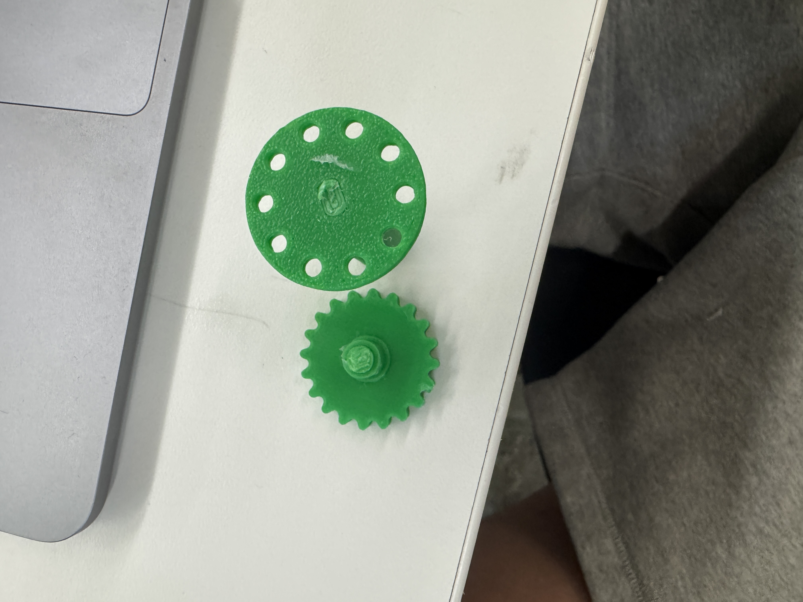

<div class="textcontainer">
<h3>Week 7: Electronic Outputs</h3>
<h4>Minimum Viable Product: Split-Flap Test</h4>
<div style="display: flex; gap: 20px; flex-wrap: wrap; align-items: center;">
<video autoplay muted playsinline loop controls style="max-width: 100%; height: auto; max-width: 350px;">
<source src="./mvpvideo.webm" type="video/webm">
Your browser does not support the video tag.
</video>
</div>
<p>
This week I just wanted to get the flap to move when I press a key. Not doing anything fancy yet. Just wanted to prove that the motor and flaps work together and nothing breaks.
</p>
<p>
Fusion took way longer than I expected. Designing the shafts and gears was painful. I had to redo them a bunch of times because they were either too loose or just straight up snapped.
It honestly felt like half the project was just messing around in Fusion trying to get stuff to fit.
</p>
<p>
For the hardware, I used a 28BYJ-48 stepper motor with a ULN2003 driver board and wired it to an ESP32. For now, I’m just typing “1” into the serial monitor to move it one digit forward like a sales counter.
</p>
<h5>Steps I Took:</h5>
<ol>
<li>Modeled shafts and gears in Fusion.</li>
<li>3D printed everything. Most of it didn’t work right away.</li>
<li>Fixed tolerances, adjusted gear size, reinforced shaft so it wouldn't snap.</li>
<li>Wired stepper to ESP32 through ULN2003.</li>
<li>Wrote simple code that listens to Serial and steps the motor.</li>
</ol>
<h5>Code:</h5>
<pre><code class="language-arduino">
const int motorPins[4] = {32, 33, 25, 26};
const int halfStepSequence[8][4] = {
{1, 0, 0, 0},
{1, 1, 0, 0},
{0, 1, 0, 0},
{0, 1, 1, 0},
{0, 0, 1, 0},
{0, 0, 1, 1},
{0, 0, 0, 1},
{1, 0, 0, 1}
};
const int stepsPerDigit = 50;
int currentDigit = 0;
int currentStep = 0;
int targetSteps = 0;
unsigned long lastStepTime = 0;
const unsigned long stepInterval = 2;
bool stepping = false;
void setup() {
Serial.begin(115200);
for (int i = 0; i < 4; i++) {
pinMode(motorPins[i], OUTPUT);
}
Serial.println("Type '1' to flap one digit forward:");
}
void loop() {
if (Serial.available()) {
char input = Serial.read();
if (input == '1' && !stepping) {
targetSteps = stepsPerDigit * 8;
currentStep = 0;
stepping = true;
currentDigit = (currentDigit + 1) % 10;
Serial.print("Flap at digit: ");
Serial.println(currentDigit);
}
}
if (stepping && millis() - lastStepTime >= stepInterval) {
lastStepTime = millis();
int phase = currentStep % 8;
for (int p = 0; p < 4; p++) {
digitalWrite(motorPins[p], halfStepSequence[phase][p]);
}
currentStep++;
if (currentStep >= targetSteps) {
stepping = false;
}
}
}
</code></pre>
<h5>Problems I Ran Into:</h5>
<ul>
<li>Stepper wasn’t spinning, it just vibrated. Turned out I had the wrong stepping sequence.</li>
<li>Gear slipped on the shaft. Had to reprint with tighter fit.</li>
<li>Shaft kept snapping. Made it thicker and lowered the motor speed.</li>
<li>Still no sensor feedback, just moving blind based on step count. Will fix later.</li>
</ul>

<h5>Oscilloscope:</h5>
<p>
Hooked up the oscilloscope to one of the motor pins to check the signal. I saw clean square waves at about 3.2V, with each step lasting around 2 milliseconds, just like the code sets it. This confirmed the ESP32 is sending proper signals to the motor driver and everything is running how it should.
</p>
<h5>What’s Next:</h5>
<p>
Gonna keep working on making the flaps more reliable and clean. Will add real inputs via shopify API, a way to reset the number, and possibly a sound effect that plays with each sale. Might also redesign the frame to look nicer and not be held together by random prints.
</p>
<h4>Download Project Files</h4>
<p><a href="./week7.zip" download>Click here to download ZIP</a></p>
</div>